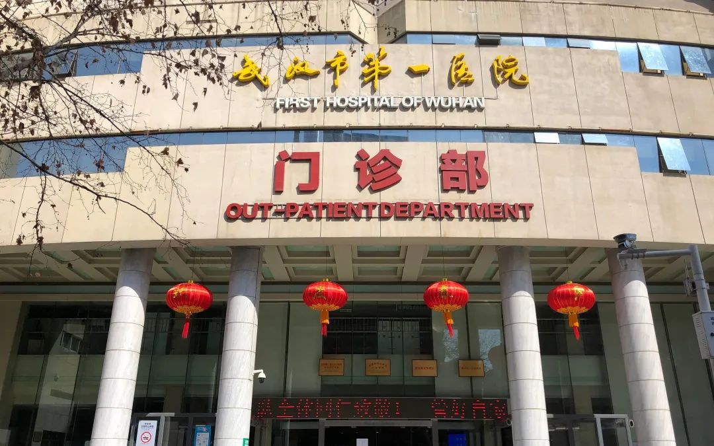
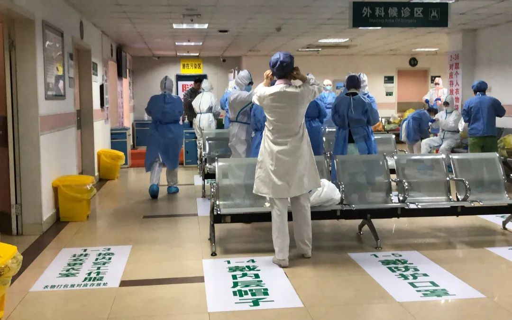

抗击过非典的护士长，来了武汉
原文链接 备份链接 文/六筒 李岩半年前刚去过武汉，和家人去旅游，主要想看看黄鹤楼。那还是夏天，热气蒸得人头上冒烟。高温挡不住蜂拥的游客，摩肩接踵，拥塞的车辆在大道上艰难挪动。“真是个大都市”，她想。 李岩是河北医科大学第二医院呼吸与危重 …
***** *****
*****
*****除夕那段时间主要是无序，工作量大、急迫，突然之间与病毒狭路相逢，刺刀见红，没有后援，只有拼命，那个时候是一片混沌状态。现在有所好转，形势每天都不一样，我每天处理的问题也不一样，还都是紧急的，但总的来说比以前有章法了。*****

武汉市第一医院门诊大楼。新京报记者 向凯 摄
文 | 新京报记者 向凯
编辑｜王婧祎 校对 | 卢茜
►本文约3398字，阅读全文约需6分钟
武汉市第一医院位于硚口区，是一家综合性三甲医院。2月10日，该院接到武汉市防控指挥部指令，成为定点医院，需要提供1000张床位。一夜之间，医院腾空外科大楼，转移原有病人，并对院区启动改造，短短两天后，就开始收治新冠肺炎确诊患者。
目前，武汉市第一医院提供床位1142张，实际收治病人数1089人，是武汉市定点医院中收治病人数最多的一家医院。
按照武汉市卫健委要求，一家定点医院的启用需要经过评估、征用、改造、验收、投入使用几个环节。2月5日，武汉市防控指挥部公布，定点医院原则上只收治确诊的重症病例和危重症病例，以及疑似的危重症病例。
那么，武汉市第一医院是如何在短时间内完成改造，成为一家能够收治传染病人的定点医院，收治大量重症病人后，又是如何运作的？我们对话了武汉市第一医院副院长陈国华。
院区改造：“三区四通道”

剥洋葱：改造的过程是怎样的？
陈国华：我们2月10日接到武汉市防控指挥部的指令，成为定点医院，让我们准备1000张床位，并且要求两天后能立刻收治新冠肺炎确诊病人。
我们本身是一家综合性医院，当初的建筑设计不是按照传染病医院来的，现在一下子要满足这么多床位需求，又要符合传染病管理、隔离的要求，压力很大。
按照传染病医院相关规定，我们很快设计了方案，传染病医院要求“三区两通道”，“三区”就是清洁区、潜在污染区（缓冲区）和污染区，“两通道”就是医护人员通道和患者通道，我们在此基础上增加了污物通道和洁净物品通道，实际上是“三区四通道”，符合国家对传染病医院的要求。
我们医院有院感专家，他们会对改造把关，做完改造之后我们要跟市疾控专家电话汇报，毕竟是紧急情况，不能像平时先报图纸、审核、修改、施工、验收，不可能有这个过程，只能是电话上报。同时我们也把方案报给市防控指挥部，他们马上派工程公司来实施改造，比如要增加隔断，形成相对独立的区域。
**剥洋葱：除了“三区四通道”，改造过程中还有哪些考量？**
陈国华：我们考虑到有10支国家援助队要来，相当于大兵团作战，大兵团作战必须要有大通道，因此，我们把全部病房都放在外科大楼里，把医护人员通道的入口设置在门诊楼，门诊楼的二层和三层都有通道和外科大楼相连。我们规定，进入外科大楼的6-13层病房，要从门诊楼的二层通道进，进入14-20层病房，要从门诊楼的三层通道进，这种设计可以保证数量较多的医护人员的分流。
另外，我们要求病房单数楼层和双数楼层的交接班时间间隔一小时，单层上班时间是上午8点钟，双层是9点钟，这样保证错峰，避免人员拥挤。目前1640名外援，加我们本院400人左右，进出还是比较通畅，说明改造和设计应该是比较成功的。
在设计病区病房时，我们本来设计了详细的方案，每个病区都分开，但是按照我们的设计做下来至少得三到四天，鉴于要争分夺秒抢时间，病区的改造做了简化，也能理解，那个时候不可能有万全之策。

医务人员通道。新京报记者 向凯 摄
**剥洋葱：医护人员进出改造后的病区，需要经过哪些流程？**
陈国华：医护人员进入污染区之前，首先要在清洁区更衣，脱下自己的外套，进入缓冲区，穿防护服，戴N95口罩。我们的防护服是全遮蔽的，帽子有三层，手套有两层，鞋套有三层。从污染区出来的人，要经过反复的消毒、洗手，脱防护服的过程中，一步一步，每做一个步骤就要洗一次手，整个过程大概要持续半个小时，我们算过，从污染区出来要达到12次洗手或者做手消毒。
从清洁区到病房一共要经过5道门，每个区间24小时都有工作人员，负责通道的管理和物资的配备、发放，每个进入病区的医护人员都要先登记、领物资。他们还会提醒医护人员如何规范的使用防护服，比如防护服脱的时候要从内往外卷，把污染部分卷到里边。

清洁区的一角。新京报记者 向凯 摄

医护人员进入潜在污染区之前，在缓冲区穿戴防护服、口罩、鞋套等。新京报记者 向凯 摄
病人管理：多方协作，分类管理
**
**剥洋葱：收治的病人如何管理？**
陈国华：新收治的所有病人都集中在外科大楼，外科大楼每一层相当于是一个大病区，比如8楼以前是妇产科一病区、妇产科二病区，现在就合并成一个大病区，交给一支医疗队接管，一般一层楼有约70张床位。
我们从2月12日开始接收病人，把一个个病区装满。接下来，根据病人的情况进行分类管理，这就要靠医生一个一个去诊断，评估病情，再对病人的病区进行调整，比如先把危重症病人转到ICU去。
在院病人的总人数每天都在变化，2月17日的数字是1096人，危重47，重症464，轻症585，有创机械通气1。因为ICU只有18张床位，因此不是所有的重症病人都能用上呼吸机，我们要求每层楼要建设2-3个亚重症单元，我们来配备呼吸机，也相当于重症病床，要让所有的队伍都动起来，全力救治重症病人。

武汉市第一医院医护人员在病房照顾病人。受访者供图
**剥洋葱：重症病人的氧气供应问题如何解决？**
陈国华：这确实是个问题。外科大楼以前只是做外科手术，现在要上呼吸机，有高流量氧气需求，我们跟氧气公司沟通，保证每天要有4个液氧罐供应，同时准备了200个氧气瓶，万一出现紧急情况，就启用氧气瓶。
**剥洋葱：收治这么多病人，医护人员数量够吗？**
陈国华：这么多病人，光靠原来呼吸、重症科室的医护人员肯定不够，医院其他科室都派员过来支持，先要进行防护知识、诊疗方案、院感防控方面的培训。后来国家救援队的到来很大程度上缓解了我们的压力。
目前支援我们的国家救援队有10支，我们在门诊大楼六楼成立联合医务处，每支援助队每天派一个人在这里值班，相当于大的综合办，每天早上大家在一起碰碰前一天的情况，及时发现问题、解决问题。

2月14日以来，有10支国家援助队支援武汉第一医院。受访者供图
**剥洋葱：医院原有的其他病人怎么办？**
陈国华：按照要求，收治新冠肺炎病人需要把其他病人都转走，当时一夜之间腾空了一栋楼，一部分病人安置到附近的湖北省中山医院、长航医院等，部分病情比较轻微的，尊重患者意见，可以办理出院回家，还有些是重症、危重症、戴呼吸机的，不能随便转院，就集中在门诊大楼10楼，安置在一个CCU病房里边，有20多人，医院单独配备医护人员。
另外，医院每天还有五六百个做透析的病人，这类病人不可能不给他们透析，这个任务还要承担，为了预防感染，治疗的同时我们也在给这些病人做新冠肺炎相关检查。
“总的来说比以前有章法了”
**
剥洋葱：疫情发生到现在，遇到最大的困难是什么？
陈国华：刚开始物资是我最头疼的事儿，大年三十之后那几天，每天防护用品都告急，而且那会儿是病人最多的时候。那几天晚上我从医院出来，感觉非常焦虑、无助，也心疼医务人员。他们每天十几个小时在这里工作，还不能回家，我作为管理者，连自己员工的生命安全都保证不了，我怎么跟他们交代？
大年三十的晚上，我吃完盒饭，就跟大家讨论，我们还有多少口罩，多少防护服，还能维持多少天。我每天不停地给指挥部打电话，从社会各种渠道去搞防护服、口罩，也发起爱心募捐。同时我们对医务人员使用防护服也严格要求，只有一线的进病房的人才能领防护服。不过现在已经好多了，防护用品是由市指挥部来统一调配，多少医护人员，需要多少，报上去，每天配送过来，物资这一点基本已经缓解了。

国家医疗队通道。新京报记者 向凯 摄
**剥洋葱：疫情发生以来，你们的工作状态是怎样的？**
陈国华：我从1月21日（腊月二十七）之后就没回过家，一直在办公室住。我们很多医护人员也是在酒店、医院住。在成为定点医院之前，我们也有发热门诊，收治发热患者；我们还参与了援建第五医院，我从大年三十过去援建，一直到初五才回来；之后又参加隔离点建设，与协和医院两家共同去建江汉方舱医院。一波接一波的工作，直到最近两天才稍微感觉平静一些。当然改造定点医院的工作量还是最大的。
现在，医护人员每4-6小时轮班一次，重症一般是4小时，其他的有些是6小时有些是8小时，有了国家援助队的帮助，现在跟之前比轻松了不少。
**剥洋葱：你们觉得应对疫情的形势发生了什么变化？**
陈国华：大年三十那几天，不仅是工作电话，还有些求救电话，亲戚、朋友、病人、职工，都来电话，要帮助解决住院问题，我只能回复他们想办法，但其实也没有办法。除夕那段时间主要是无序，工作量大、急迫，突然之间与病毒狭路相逢，刺刀见红，没有后援，只有拼命，那个时候是一片混沌状态。现在有所好转，形势每天都不一样，我每天处理的问题也不一样，还都是紧急的，但总的来说比以前有章法了。
*洋葱话题*
*▼*
*****扫描下方二维码，分享你封城期间的心情和故事*****

***推荐阅读***


十堰“战时管制”：五十名志愿者与五千名居民的自助生活

疫情下的武汉咖啡馆：就算店垮了，最后一杯咖啡也要给医护人员

*********既然在看，就点一下吧****** *********
*********
原文链接 备份链接 文/六筒 李岩半年前刚去过武汉，和家人去旅游，主要想看看黄鹤楼。那还是夏天，热气蒸得人头上冒烟。高温挡不住蜂拥的游客，摩肩接踵，拥塞的车辆在大道上艰难挪动。“真是个大都市”，她想。 李岩是河北医科大学第二医院呼吸与危重 …
原文链接 备份链接 ********** *****黄冈的第一个病例是一名司机，是给武汉的华南海鲜市场运送海鲜的。**********因为业务原因，这个司机在黄冈的黄州中心菜市场逗留过。***** 黄州区人民医院的医护人员在防护服背面贴上 …
原文链接 备份链接 “ - 疫 情 之 下 - 武汉的疫情就像一簇紧簇的乌云，笼罩在每一个人的心头。但所幸，在这个受伤的城市中，在每台志愿者车里，在疲于奔波的路上，总有那么一群可爱的人，温暖着我们前线医护工作者的心。 ” 1 2020年 …
原文链接 [备份链接]() *************▲ *************2020年2月19日，在武汉市泰康同济医院，军队医护人员互相整理防护服。 （新华社/图） 全文共9028字，阅读大约需要20分钟。 此次派出的县级医院 …
原文链接 备份链接 澎湃新闻记者 黄霁洁 明鹊 朱莹 温潇潇 葛明宁 特约撰稿 张小莲 实习生 张卓 沈青青 陈媛媛 蓝泽齐 住院15天后，2020年2月1日，阳光明媚，湖北黄冈市中心医院的医生黄虎翔准备出院了。他瘦了一些，洗了澡，换了 …